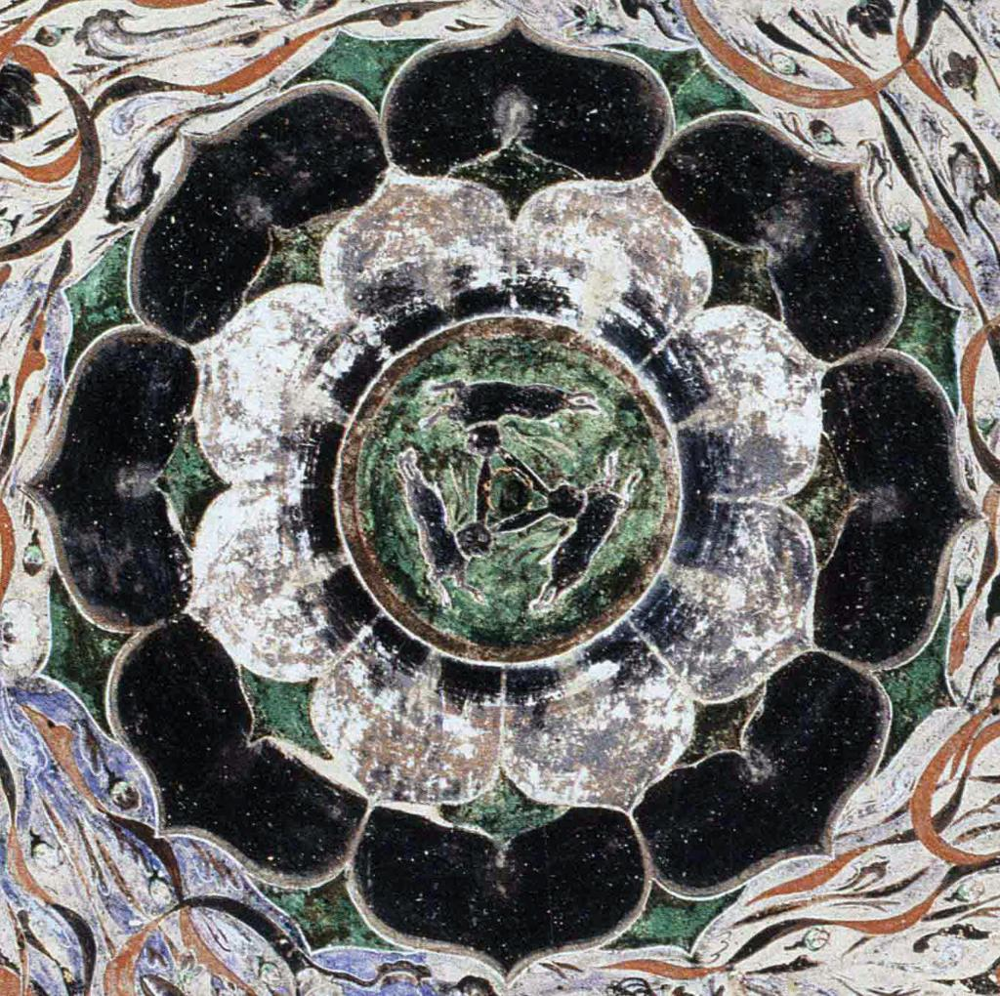
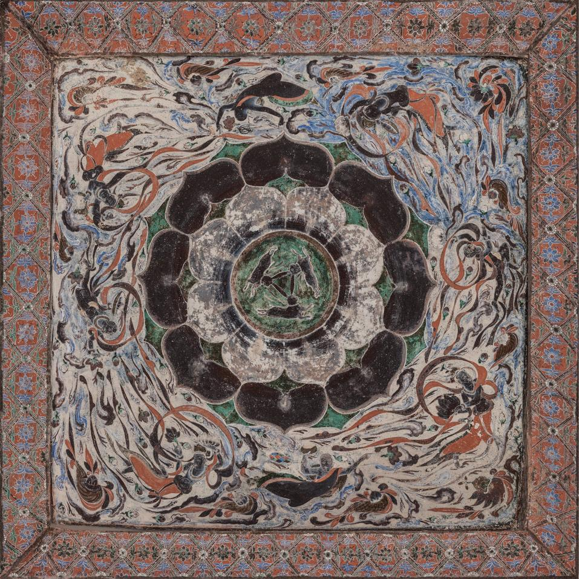

遗产密令
Heritage Archive档案编号 DH-001
敦煌莫高窟 · 窟顶藻井 · 一份记录散佚的图像档案

第407窟 窟顶井心影像 · 敦煌研究院公开资料
案卷 DH-001 · 待重编
消失的纹样
Heritage Archive · Dunhuang · Cave 407底片柜最下层，抽出一张没有编号的玻璃底片。
影像还在：一方覆斗形窟顶，一朵四层八瓣的大莲花，八身飞天绕着它飞。可它的著录卡是空的——纹样没有名字，颜料没有注记，六块底片散着顺序，出自哪一座洞窟，那一栏只画了一道横线。
按规程，记录不全的档案必须重新调查。于是这张底片被放上观片台，编号 DH-001，交到你手上。
01纹样 · 名称缺失待恢复
02色彩 · 颜料注记散佚待恢复
03图像 · 六块底片错序待恢复
04年代 · 窟号与年代空缺待恢复
四关 · 约 3–5 分钟 · 无需声音。每一条结论，都要从画面里重新看出来。
三兔莲花纹藻井
敦煌莫高窟第407窟 · 主室窟顶 · 隋

第407窟 三兔莲花纹藻井敦煌研究院公开影像
- 名称
- 三兔莲花纹藻井，亦称「三兔共耳」
- 所在
- 莫高窟第407窟主室覆斗形窟顶，方井井心
- 年代
- 隋（581–618）。同类「三兔共耳」图案在莫高窟约二十座洞窟中出现，最早见于隋开皇四年（584）的第302窟
- 构图
- 方井中央绘四层八瓣大莲花，莲花四周八身飞天环绕飞行，或持莲花、或托花盘、或捧香炉、或舞锡杖；井心外缘为多层菱格莲花纹与垂幔纹边饰
- 纹样
- 花心三只兔子两两共用一耳，看似只有三耳；三耳构成等边三角形，三兔逆时针相逐、永远追不上彼此。兔与飞天、天花的旋转方向一致，静止的莲花也像在转
- 色彩
- 以矿物颜料为主：石青取自蓝铜矿，石绿取自孔雀石，红为赭石一类含铁颜料，白则来自高岭土、石膏或铅白，墨为炭黑。历经千年氧化与褪色，今日所见的颜色已不同于初绘
- 意义
- 藻井位居窟顶正中，如天穹华盖；莲花象征清净，「三」在中国传统中含完整、无尽的意味，兔则寄托瑞应与生生不息。同类三兔共耳图像亦见于中亚与欧洲的宗教建筑装饰，被视为丝绸之路文化交流的一个例证
你恢复的不只是一幅图像。方井、莲花、三只共用耳朵的兔子、环绕的飞天与收边的菱格纹，把隋代画工对天空的想象压缩进了一方窟顶。它也没有被封存在过去——颜料的褪色、图案的流布、一次又一次的拍摄与辨认，都是这段记忆仍在被阅读的证据。
资料与图像出处
- 敦煌研究院 · 莫高窟第407窟：窟形、藻井结构与三兔纹样的官方著录
- 澎湃新闻 · 敦煌发布《兔年说兔：敦煌壁画里的「小白兔」》：三兔共耳图案的构成与流布
- 光明网《何以中国·壁画里的中国：敦煌「三兔藻井」》：第407窟藻井的时代与现状
- 大公文汇《敦煌莫高窟：探密「三兔共耳」的千年联结》：图案在丝绸之路上的跨文化出现
本页为教学性互动作品。壁画影像取自敦煌研究院等机构公开的第407窟藻井资料，显示时对亮度与饱和度略有调整以便观察细节；关卡中的点击区域与色点是示意标注，不是文物著录的一部分。纹样、年代与文化解释均依上述公开资料整理，未作虚构。